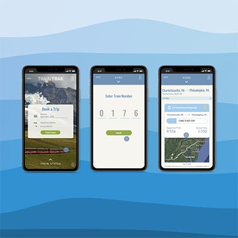
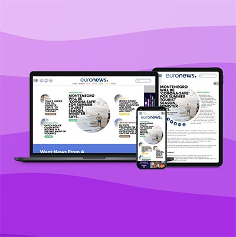
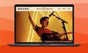

ABOUT
I am majoring in User Experience & Interactive Design at the Westphal College of Media Arts and Design in Philadelphia, PA. I love discovering everyday issues and utilizing my creativity to provide functional and well-thought-out solutions for them. When designing, I often refer to my passions for inspiration which include nature, graphic design, photography, and human connections.
AMTRAK APP - TASK FLOW REDESIGN
In this redesign, I learned the importance of microinteractions and the skills of creating signature features in mobile applications. I also learned...
EURONEWS WEBSITE - NAVIGATION REDESIGN
Euronews.com is a news site that provides an international view, giving a new and different perspective. The main goal of their site...
ARCTIC MONKEYS WEBSITE - VISUAL BRAND REDESIGN
Arctic Monkeys is a British Indie rock band. Their site is a place for fans and followers to keep updated with album releases, tour dates, videos, and merchandise sale. The main goal is...
B.S. User Experience & Interactive Design
Drexel University / Philadelphia, PA / Anticipated Graduation 2025 / GPA: 3.9/4.0
Pre-College in Graphic Design
PrattMWP / Utica, NY / Summer 2019 / GPA: 4.0/4.0 / Gained 6 college credits
Arts & Crafts / Massanutten Resort / JULY 2020 – JANUARY 2021 / MCGAHEYSVILLE, VA
Mentorship – Graphic Designer / Muddy Feet Graphics / AUGUST 2019 – MARCH 2020 / HARRISONBURG, VA
cil25@drexel.edu
(540) 578-6900